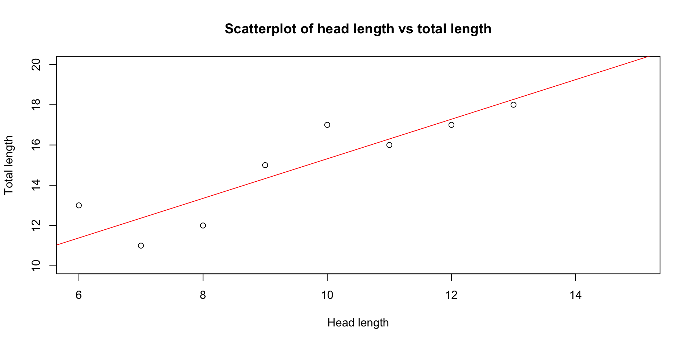
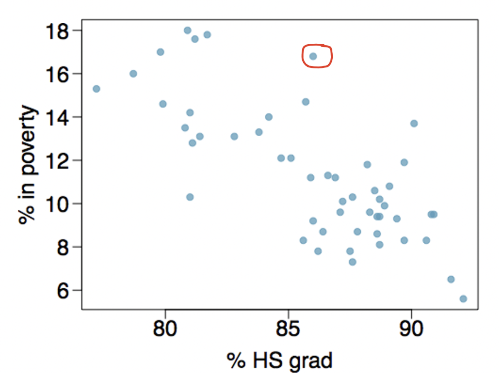
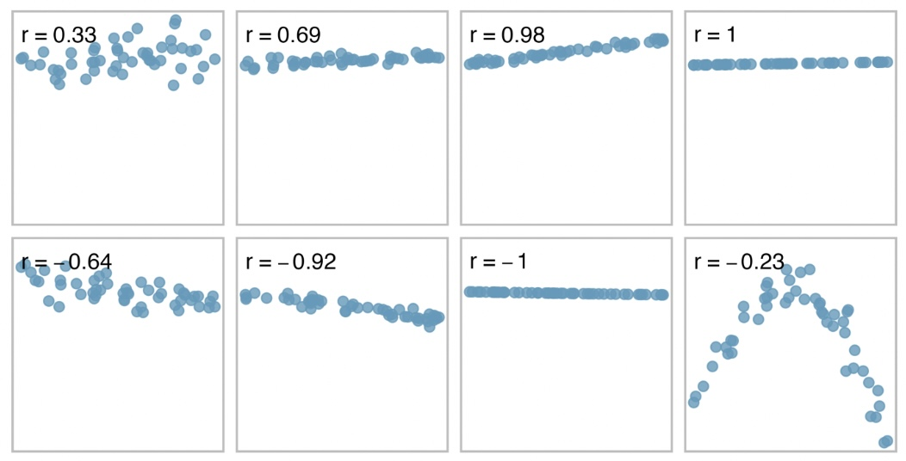
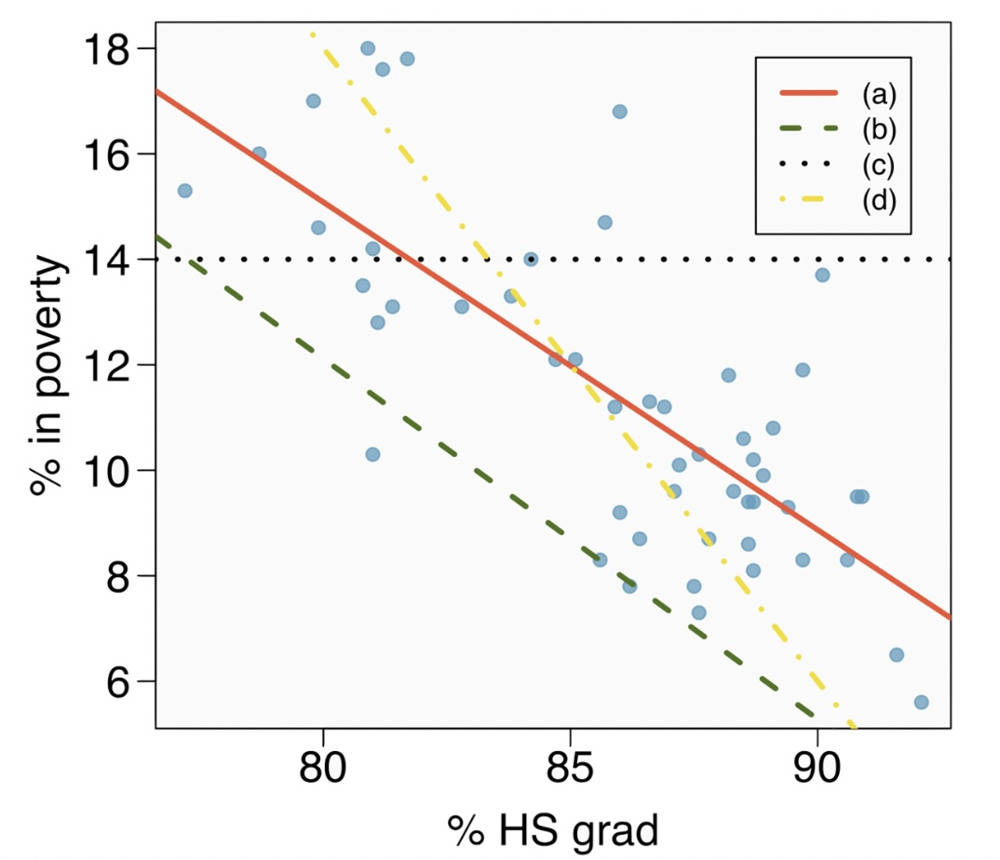
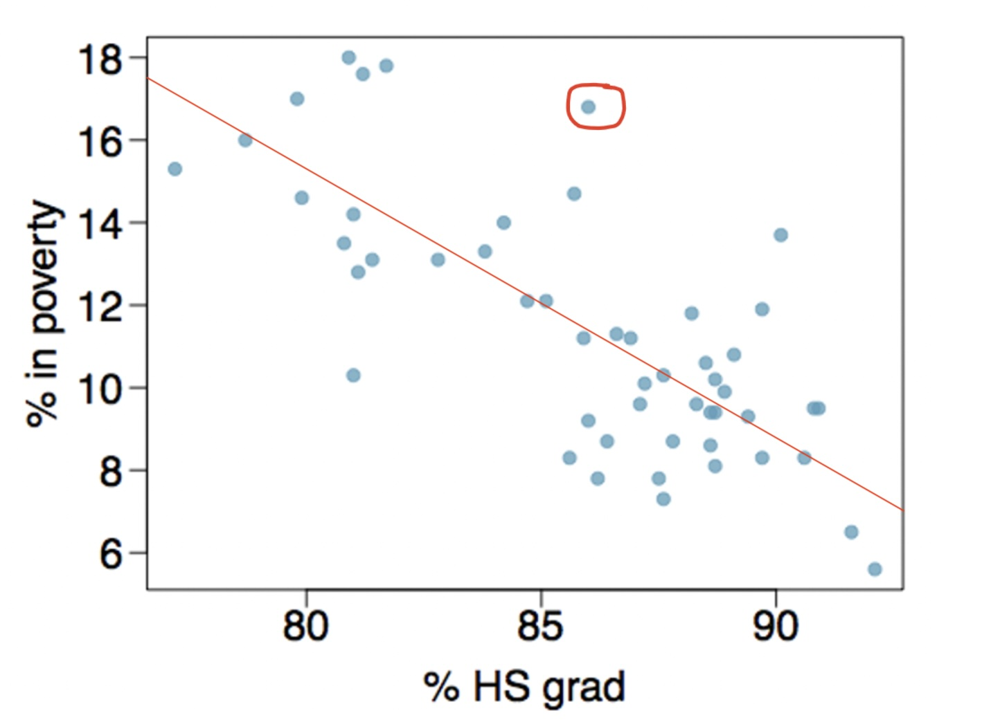
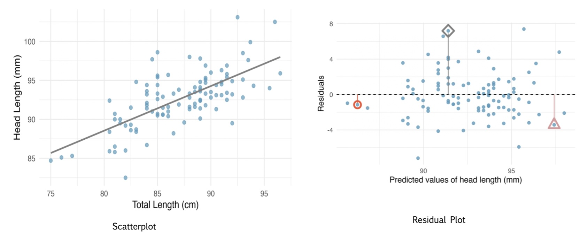
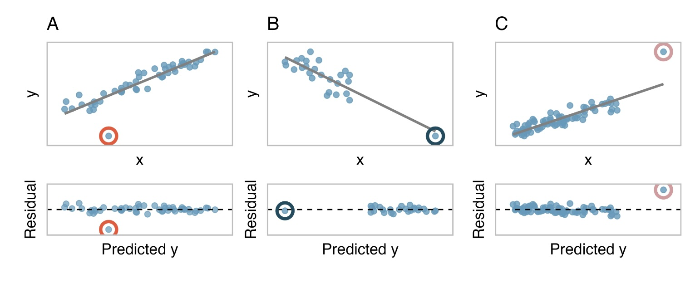
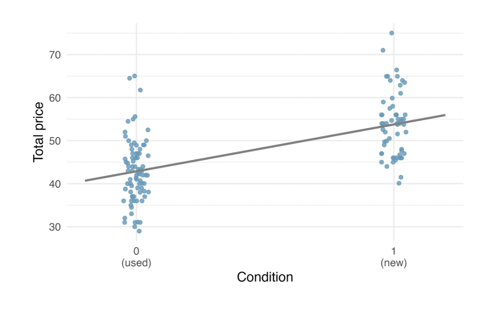

Simple Linear Regression
Simple Linear Regression (SLR)
Scatterplots: Association between Variables
Scatterplots are great visualization tools for showing the relationship between two numerical variables. Consider the following scatter plot for high school graduation rates and poverty rates for various cities in the US.

Examining Scatterplots
- Each point on the scatterplot presented earlier represents a case (in this case a city).
- For each city, we have the high school graduation rate and the percentage poverty. The circled point represents a city with a HS graduation rate of about 87% and a poverty rate of about 17%.
- Direction of association: the scatterplot shows a negative association between the two variables. As the HS grad rate increases, the poverty rate decreases.
- Type of relationship: the scatterplot shows a linear relationship between the two variables. The points are roughly aligned in a straight line.
- Strength of association: the relationship between the two variables is fairly strong. Most points are tightly clustered around the line. This can be subjective!
A Note
When interpreting scatterplots, consider these guidelines:
- What type or association is it? Linear, non-linear, no association?
- What is the strength of the association? Strong, moderate, or weak?
- What is the direction of the association? Positive or negative?
Predictor vs Response Variables
When we suspect one variable might causally affect another, we label the first variable the explanatory variable and the second the response variable. If education level causes poverty rate to change, then education level is the explanatory variable and poverty rate is the response variable.
We also use the terms explanatory and response variables to describe situations where the response variable might be predicted using the explanatory variable even if there is no causal relationship.
In the earlier scatterplot for HS graduation and percentage poverty, HS grad can be considered explanatory variable and poverty the response variable.
Strength of Linear Relationships
- We use a statistic called correlation coefficient, \(r\), to measure the strength of a linear relationship between two variables. This is more objective than eyeballing the scatterplot.
- The values of \(r\) ranges anywhere from -1 to 1.
- When \(r\) is near 0, this indicates no relationship while values near 1 indicate strong positive linear relationship. If the relationship is negative, \(r\) will be negative and the strength increases as you approach -1.
- The closer the points are to a straight line, the stronger the correlation. See the scatterplots on the next slide and their correlation values.
- If the points make an horizontal line, the correlation is 0.
Correlation

Calculating the Correlation Coefficient
The formula for the correlation coefficient is a bit complex and involves the means and standard deviations of the two variables. Below is the formula for the correlation coefficient between two variables \(X\) and \(Y\). \[r = \frac{1}{n-1}\sum_{i=1}^{n}\frac{x_i -\bar{x}}{s_x}\frac{y_i-\bar{y}}{s_y}\] Where,
\(x_i\) and \(y_i\) are the individual data points.
\(\bar{x}\) and \(\bar{y}\) are the means of the two variables.
\(s_x\) and \(s_y\) are the standard deviations of the two variables.
We won’t use this formula but you should understand it. For example, based on the formula, what can you say about the units for \(r\)?
Fitting a Line
- Linear regression is a statistical technique used to make estimated predictions of the outcome variable values based on the predictor variable values.
- To do that, we have to fit a line through the cloud of points. This line is called the regression line.
- But … how do we fit the line through the cloud of points?
- Consider the four lines in the scatterplot on the next slide. Which line do you think is the best fit? Why?
Cont …

Another Note
- In a perfect scenario, we would have all points falling on the line, but this is not possible.
- So, we choose a line for which all the points are on the line or close enough to the line.
- Although this way of thinking is not mathematically rigorous, it is easier to make sense of. A more rigorous way is called the least squares regression line (more on this later).
Regression Equation and Residuals
The equation of the regression line is given by \(\widehat{y}=b_0+b_1x\), where \(\widehat{y}\) is the estimated value of the response variable, \(x\) is the explanatory variable, \(b_0\) is the y-intercept and \(b_1\) is the slope of the line.
We can use the equation of the regression line to make estimated predictions for the response variable.
The difference between the observed (actual) value of the response variable and the predicted (calculated) value is called the residual (or error). The best line is one that minimizes these residuals overall.
The residual of the \(i^{th}\) observation is given by \(e_i=y_i-\widehat{y}_i\) where \(y_i\) is the observed value of the response variable and \(\widehat{y}_i\) is the predicted value of the response variable.
Example
Suppose the equation of the best fitting line (the red line) is \(\widehat{y} = 17.5 - 0.05x\). The circled point is approx \((87, 17)\).
Using the model, the predicted poverty rate for a city with a HS graduation rate of 87% is \(17.5 - 0.05(87) = 13.15\)%.
The residual for this city is \[\text{Actual poverty}-\text{predicted}=17 - 13.15 = 3.85\%.\]
Here, the model underestimates the poverty rate for this city by 3.85%.

Residual Plots
- Each observation on a scatterplot will have a residual (positive, negative, or zero). A residual of 0 means that the predicted value and the actual value are the same. These are points on the line.
- In a perfect association (almost never happens in the real world), the residuals for each point is 0.
- A residual plot is often used for assessing how well the regression line fits the data. Points with a perfect fit are placed on an horizontal line marked with 0 while points above are place above the line.
- Next slide scatterplot and a corresponding residual plot.
Cont…

The Least Squares Regression Line
- The least squares regression line is the line that minimizes the sum of the squared residuals.
- The process for fitting the line is:
- Fit an arbitrary line through the points. Find the equation of this line.
- Calculate the residual for each point.
- Square each residual.
- Add up all the squared residuals. This is called sum of squared errors (SSE).
- Repeat the process until you find the line for which the SSE is minimum.
- As you may have suspected, doing this process manually can time wasting and prone to errors. We can do this fast and easily using a computer program.
Things to Note
- The point \((\bar{x},\bar{y})\) is known as the centroid and always falls on the regression line. Here, \(\bar{x}\) is the average of the X variable and \(\bar{y}\) is the average of the Y variable.
- There is a relationship between the slope of regression line, \(b_1\) and the correlation coefficient, \(r\): \[b_1 = r\times\frac{s_y}{s_x}\] where,
\(s_x\) and \(s_y\) are the standard deviations of the two variables.- The intercept of the line, \(b_0\) is given by \[b_0 = \bar{y} - b_1\bar{x}\]
Example
The table below shows the head length and total length of 9 fish. Find the equation of the regression line. Assume that the explanatory variable. The standard deviations of the two variables are \(s_x = 2.74\) and \(s_y = 2.92\).
| Head length | Total length |
|---|---|
| 5 | 10 |
| 6 | 13 |
| 7 | 11 |
| 8 | 12 |
| 9 | 15 |
| 10 | 17 |
| 11 | 15 |
| 12 | 17 |
| 13 | 18 |
Solution
We are given that the explanatory variable (x-axis) is head length and the response variable (y-axis) is total length. We want to find the equation of the regression line.
First, we create a scatterplot to visualize the relationship.
We see that the relationship is linear and strong. Now, calculate the means of the two variables. \(\bar{x} = 9\) and \(\bar{y} = 14.33\).
Next, calculate the correlation coefficient: \(r = 0.92\).
Using the formula \(b_1 = r\frac{s_y}{s_x}\), we get \(b_1 = 0.92\times \frac{2.92}{2.74} = 0.98\).
Finally, using the formula \(b_0 = \bar{y}-b_1\bar{x}\), we get \(b_0 = 14.33-0.98(9)=5.51\). Thus, the equation is \(\hat{y} = 5.51 + 0.98x\).
Interpreting SLR model parameters
Sometimes we use the term linear model to refer to a linear regression equation (e.g., \(\hat{y}=5.51+0.98x\)). The slope (\(b_1\)) and the intercept (\(b_0\)) are the model parameters. But, what do they mean?
Slope: the slope of the line is 0.98, and is usually interpreted as, for every one unit increase in head length (the explanatory variable), the total length(response variable) increases by 0.98 units.
Intercept: the intercept of the line is 5.51. This is the value of the response variable when the explanatory variable is 0. In this case, the intercept does not make sense because we can’t have a head length of 0.
Strength of Fit (R-squared)
The coefficient of determination (abbreviated as \(R^2\)) of a linear model describes the amount of variation in the response variable that is explained by the least squares regression line (the model). \(R^2\) is computed as follows:
- Compute the squared residuals (i.e., \((y_i-\hat{y}_i)^2\)), and sum them up (we call these sum of square errors or SSE).
- Compute the deviation of each value of the response variable (\(y_i\)) from the mean (\(\bar{y}\)). Square these deviations and add the squares up. This is called the sum of squares total (SST). This is a measure of the total variation in the response variable.
- Compute the difference between SST and SSE. Divide the difference by the SST to get the \(R^2\). Mathematically, \[R^2 = \frac{SST-SSE}{SST}=1 - \frac{SSE}{SST}\]
Example
Using the data from the previous example, we found the equation of the linear regression model to be \(\hat{y} = 5.51 + 0.98x\). Calculate the \(R^2\) for this model, and interpret it in context.
First, we calculate the SST: \(SST = \sum(y_i-\bar{y})^2 = (10-14.33)^2+...+ (18-14.33)^2 \approx 68\).
Next, we calculate the SSE: \(SSE = \sum(y_i-\hat{y}_i)^2 = (10-10.41)^2+...+ 0.2518-18.25^2 \approx 9.98\).
Note that \(\hat{y}_1=10.41=5.51+0.98\times 5\)Finally, we calculate the \(R^2\): \(R^2 = 1 - \frac{9.98}{68} = 0.8532\).
Interpretation: 85.32% of the variation in the total length of the fish (response variable) is explained by the head length (predictor variable). This is a strong fit.
Notice that the square root of \(R^2\) is approximately equal to the correlation coefficient \(r\). For SLR, \[R^2 \approx r^2\].
Outliers in Linear Regression
Outliers in regression are observations that tend to fall far from the cloud of points in a scatterplot.
Outlying can happen in the x-direction, y-direction, or both.
Outliers that fall horizontally away from the center of the cloud of points are called leverage points.
Outlying point(s) may or may not have an impact on the regression line. Whenever the points influence the slope of the line, they are called influential points (see next slide).
It can be very tempting to remove outliers from the data. However, this should be done with caution. Models that ignore exceptional points often perform poorly.
One way to deal with outliers is to perform two separate analyses - one with the outliers and one without. This will give a more holistic picture.
Cont …
A:
The circled point is an outlier in the y direction and from the model. The point appears to have only a minimal influence on the line.
B:
The outlier is to the right in the x and y direction. Not an outlier from the model. Appears to barely influence the regression line.
C:
Appears to have a strong influence on the regression line. The line would fit the data better without this point.

If a point(s) is both horizontally far from the cloud and the line, then, it is an influential point.
Categorical variables in SLR
- So far, we have been dealing with numerical variables. But what if we have a categorical predictor variable?
- We can still use linear regression, but we have to convert the categorical variable into a numerical variable using dummy coding. A categorical variable with 2 levels (e.g., used or new) can be converted to numerical by assigning a 0 to one of the levels and a 1 to the other (e.g., new=1).
- The scatterplot to the right shows the relationship between total price of a game and the game condition (dummy coded as 0 for used and 1 for new).
Game total price vs condition

Cont …
- The linear model for the scatterplot can be written as \[\widehat{price} = b_0 + b_1\times cond_{new}.\]
- Notice that, in the model equation, we use the level that was assigned 1, while the level that was assigned 0 is dropped. We call the level that was dropped a reference level (more on this later).
- When you use software, the model turns out to be, \[\widehat{price} = 42.87 + 10.9 \times cond_{new}.\]
- Interpretation: The intercept ($42.9) is the estimated average price for used games. The slope indicates that, on average, new games sell for about $10.9 more than used games. Here,
one unit increaserepresents change from used to new.
Caution
The interpretation of the slope compares used and new games. A common error is to say that new games cost $10.9. This is incorrect. The slope ($10.9) is the average price difference between new and used games.
Conditions/Assumptions for running SLR
Before running a linear regression model, certain conditions/assumptions must be met:
- Linearity: The relationship between the (numerical) predictor and response variable is linear. To check this, you can use a scatterplot.
- Independence: The observations/cases are independent of each other. This is often a matter of study design.
- Normality: The residuals are normally distributed. This can be checked using a histogram of the residuals.
- Equal variance: The variance of the residuals is constant across all levels of the predictor variable. This is also called homoscedasticity. This can be checked using a residual plot.
To remember these conditions/assumptions, think of the acronym LINE.
A Final Note
Extrapolation can be dangerous. This is the practice of using a regression line to make predictions for values of the explanatory variable that are outside the range of the data. This is risky because the relationship between the variables may not be linear outside the range of the data.